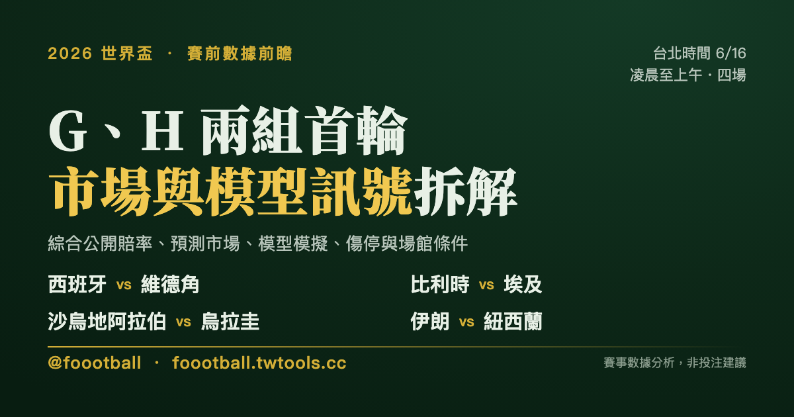

西班牙開鑼、烏拉圭與比利時壓陣：G、H 兩組首輪賽前數據前瞻
台北時間 6/16 凌晨到上午，G、H 兩組首輪四場接力登場。歐國盃冠軍西班牙在亞特蘭大巨蛋對世界盃新軍維德角，是本日市場與模型最一致看好的對決；另外三場——比利時對埃及、烏拉圭對沙烏地阿拉伯、伊朗對紐西蘭——則普遍指向強隊小勝、低比分劇本。這篇綜合公開賠率、預測市場、模型模擬、傷停、近況、歷史交手與場館條件，客觀拆解四場的賽前訊號與看點。本文為賽事數據分析，非投注建議。

2026 世界盃賽前數據前瞻 Vol. 001
⚠️ 閱讀說明：本文為賽事數據分析，引用公開賠率與預測市場資料作為「市場預期」的客觀參考（如同財經報導引用大盤指數），非投注建議，亦不提供任何投注管道。所有賠率為發稿當下快照、開賽前會變動；先發名單多在開賽前約 1 小時才公布，文中陣容為預測。
Medium／Substack 貼稿指南 1. 標題用 H1（上方主標） 2. 文章開頭插入
cover.png3. §1 總覽表可直接貼 markdown 表格 4. §2–§6 純文字直接 copy-paste 5. 末尾貼 tags（此區塊與圖片標記僅供跨平台貼稿，自家站 build 會自動移除。此文型建議自家站優先，跨平台視各站內容政策斟酌。）
§1 今夜總覽：四場一次看
台北時間 6/16 凌晨 00:00 起，每隔三小時一場，到上午 09:00 連打四場。下表的「勝率區間」綜合公開賠率、預測市場（如 Kalshi）與模型模擬（如 Opta、Dimers），不代表單一市場價格，也不是結果預測：
| 賽事（組別） | 台北時間 | 場館 | 市場／模型勝率區間（勝／和／負） | 一句話看點 |
|---|---|---|---|---|
| 🇪🇸 西班牙 — 🇨🇻 維德角（H） | 00:00 | 亞特蘭大 Mercedes-Benz（巨蛋・恆溫） | 約 90%+ ／ 7% ／ 4% | 本日唯一高度傾斜的對決，總進球線直接拉到 3.5 球 |
| 🇧🇪 比利時 — 🇪🇬 埃及（G） | 03:00 | 西雅圖 Lumen Field | 約 61% ／ 24% ／ 17% | 強隊小勝，但 De Bruyne／Lukaku 首戰強度待觀察，埃及防守硬 |
| 🇸🇦 沙烏地阿拉伯 — 🇺🇾 烏拉圭（H） | 06:00 | 邁阿密 Hard Rock | 約 12% ／ 21% ／ 68% | Bielsa 的烏拉圭低比分球風，邁阿密高溫高濕 |
| 🇮🇷 伊朗 — 🇳🇿 紐西蘭（G） | 09:00 | 洛杉磯 SoFi（有頂・側開） | 約 54% ／ 26% ／ 20% | 四場中最接近的一場，和局機率不低 |
一個共同訊號值得先點出來：除了西班牙那場，其餘三場市場全都偏向低比分（Under 2.5 球）。換句話說，今夜的賽前訊號是「一場可能大勝、三場預期小而悶」。以下逐場拆解。
§2 西班牙 vs 維德角（H 組）🇪🇸
台北 6/16 00:00・亞特蘭大 Mercedes-Benz Stadium（可開合頂巨蛋・恆溫）
市場與模型訊號：這是今夜唯一高度傾斜的對決。西班牙的市場隱含勝率約在 90% 以上（美式賠率 -1000 至 -1500），維德角僅約 4%。最能說明市場態度的，是大小球——多數公開賠率不開常見的 2.5 球，而是直接把總進球線拉到 3.5 球，等於預期西班牙會贏好幾球。Opta 的 25,000 次模擬給西班牙 87.2% 勝率，方向一致。
人員與傷停：西班牙是歐國盃衛冕冠軍、FIFA 世界第 2，中場 Rodri（羅德里）、Pedri（佩德里）領銜，這也是隊史首支沒有任何皇家馬德里球員的世界盃名單。值得注意的是新星 Lamine Yamal（拉明·亞馬爾，腿後肌）與 Nico Williams（尼科·威廉斯，疝氣）已回到訓練，但首戰預計從替補席待命，de la Fuente 可能讓 Ferran Torres（費蘭·托雷斯）、Oyarzabal（歐亞薩巴爾）等人先扛進攻端。維德角是世界盃新軍，靠 36 歲隊長 Ryan Mendes（萊恩·門德斯）與 40 歲門將 Vozinha（沃濟尼亞）撐場。
近況：西班牙近約 31 場不敗（de la Fuente 任內 42 戰僅 2 負）；維德角資格賽 7 戰 6 勝、力壓喀麥隆出線，但兩隊層級差距明顯。
歷史交手：兩隊史上從未交手。
場館與地理：亞特蘭大球場是可開合頂的巨蛋，世界盃期間裝設天然草皮，比賽日才開頂，場內條件接近恆溫，天氣不是變數。揭幕戰，雙方全休。
數據前瞻：市場與模型方向高度一致。 - 勝負：西班牙勝 - 進球數：偏 Over 3.5（盤口已反映大勝預期） - 比分傾向：西班牙 3-0 或 4-0 - 節奏推演：西班牙若早段破門，比賽可能迅速失衡、分差拉開
§3 比利時 vs 埃及（G 組）
台北 6/16 03:00・西雅圖 Lumen Field
市場與模型訊號：比利時是明顯的熱門、但非一面倒——市場隱含勝率約 61%，和局約 24%、埃及約 17%（美式約 -150／+280／+400）。大小球接近五五、略偏 Under 2.5，「兩隊皆進球（Both Teams To Score, BTTS）」也偏向「No」。一家公開賠率把和局 +290 列為值得留意的盤面。
人員與傷停：比利時由 Rudi Garcia（魯迪·加西亞）帶隊，仍由 De Bruyne（德布勞內）、Courtois（庫爾圖瓦）、Doku（多庫）等人撐起即戰力；但 De Bruyne 與 Lukaku（盧卡庫）都經歷過傷病與出賽量管理，首戰能拿出多少比賽強度仍待觀察——這也是市場沒把比利時開成高度傾斜盤面的原因之一。埃及由隊長 Salah（薩拉，6 月 15 日、比賽當地日剛滿 34 歲）搭配 Marmoush（馬穆什）雙箭頭，防守組織紮實。
近況：比利時近約 13 場不敗、資格賽 5 勝 3 平不敗；埃及資格賽 6 場零失球，熱身 0-0 逼平西班牙、4-0 大勝沙烏地，最後一戰 1-2 惜敗巴西。
歷史交手：4 次交手埃及 3 勝 1 負領先（全為友誼賽，最近一次 2022 埃及 2-1）；樣本小、皆非正式賽，參考價值有限。
場館與地理：揭幕戰雙方全休；西雅圖當日天氣預報來源分歧，建議賽前再確認，但西雅圖 6 月氣候本就溫和，預期非變數。
數據前瞻：埃及的擺大巴＋Salah 反擊，是本場「逼和或爆冷」的劇本來源。 - 勝負：比利時勝 - 進球數：偏 Under 2.5 - 比分傾向：比利時 1-0 或 2-0 - 節奏推演：埃及預期擺低位防守，比賽可能上半場 0-0、下半場才見破門
§4 沙烏地阿拉伯 vs 烏拉圭（H 組）
台北 6/16 06:00・邁阿密 Hard Rock Stadium
市場與模型訊號：烏拉圭是清楚的熱門，市場隱含勝率約 68%，和局約 21%、沙烏地約 12%（美式烏拉圭約 -200 至 -220）。大小球偏 Under 2.5，多位分析者點出「烏拉圭零封」的方向——這與烏拉圭的球風高度吻合。
人員與傷停：烏拉圭由 Bielsa（比爾薩）執教，Valverde（巴爾韋德）、Darwin Núñez（達爾文·努涅斯）領銜，門將 Muslera（穆斯萊拉）復出迎接生涯第 5 屆世界盃；Suárez（蘇亞雷斯）缺席,是他自 2010 以來首次缺席世界盃。⚠️ 後防是烏拉圭最大變數：Araújo（阿勞霍）肌肉傷勢惡化、Giménez（希門尼斯）也有傷，兩人都很可能缺席首戰，De Arrascaeta（德阿拉斯卡埃塔）同樣受傷在身。即使被市場看好，烏拉圭也未必踢得成大勝劇本——這也支撐了 Under 2.5 的判斷。沙烏地賽前約兩個月換帥（Donis 接替 Renard），26 人中 25 人效力本國聯賽，王牌為隊長 Al-Dawsari（多薩里）。
近況：沙烏地近 8 戰 5 負、進攻乏力；烏拉圭悶而穩——近 9 場 6 場零失球，低比分球風明顯（近 23 場僅 5 場進球數超過 2.5）。
歷史交手：3 次交手 1 勝 1 和 1 負平分秋色；唯一一次正式賽是 2018 世界盃烏拉圭 1-0（Suárez 進球）。
場館與地理：邁阿密當日預報高溫高濕（約 28–30°C），且有雷雨可能、不排除比賽中斷；炎熱環境有利偏好放慢節奏、控球的烏拉圭。
數據前瞻：市場共識是「烏拉圭低比分小勝、而非大勝」。 - 勝負：烏拉圭勝 - 進球數：偏 Under 2.5 - 比分傾向：烏拉圭 1-0 或 2-0 - 節奏推演：上半場偏悶，烏拉圭較可能靠下半場體能與定位球拉開
§5 伊朗 vs 紐西蘭（G 組）
台北 6/16 09:00・洛杉磯 SoFi Stadium（固定頂、側面開放）
市場與模型訊號：這是四場裡盤口最接近的一場。伊朗的市場隱含勝率約 54%，和局約 26%、紐西蘭約 20%（美式伊朗約 -118 至 -120）——注意和局機率不算低。大小球明顯偏 Under 2.5，BTTS 偏「No」。Dimers 模型給伊朗 53.5%、預測比分傾向伊朗 1-0。
人員與傷停：伊朗由 Ghalenoei（加勒諾伊）帶隊，隊長 Jahanbakhsh（賈漢巴赫什）、王牌 Taremi（塔雷米,第 3 屆世界盃）領銜；⚠️ Azmoun（阿茲蒙）落選（非傷病因素），且 26 人名單中有 17 人來自 2 月起停賽的本國聯賽，比賽節奏可能受影響。紐西蘭由 Bazeley（貝茲利）帶隊，靠隊史頭號射手 Chris Wood（克里斯·伍德,34 歲,傷癒）領軍，FIFA 排名約 85、與伊朗（約 20）有明顯差距。
近況：伊朗狀態佳（近 5 場 11 進 3 失,曾 5-0 大勝哥斯大黎加）；紐西蘭極差（6 月熱身 0-4 不敵海地、0-1 負英格蘭,近 5 場失 10 球）。
歷史交手：僅 2 次交手——1973 友誼賽 0-0、2003 伊朗 3-0；伊朗保持不敗，但樣本久遠、參考性低。
場館與地理：SoFi 球場有固定頂、但側面開放，並非全空調恆溫（常被誤解），靠遮蔭、海風與霧扇調節；揭幕戰雙方全休。
數據前瞻：方向一致指向「伊朗小勝、低比分」，但和局機率是四場最高。 - 勝負：伊朗勝 - 進球數：偏 Under 2.5（兩隊皆進球偏「No」） - 比分傾向：伊朗 1-0 或 2-0 - 節奏推演：伊朗主導，但若早段破不了局，和局風險會上升
§6 一句話總表
| 賽事 | 市場看好 | 比分傾向 | 進球數 | 節奏劇本 | 模型／市場一致性 |
|---|---|---|---|---|---|
| 西班牙 vs 維德角 | 西班牙 | 3-0 | Over 3.5 | 早段破門即可能失衡 | 高 |
| 比利時 vs 埃及 | 比利時 | 1-0 | Under 2.5 | 先悶、下半場找破門 | 中 |
| 沙烏地 vs 烏拉圭 | 烏拉圭 | 1-0 | Under 2.5 | 上半場悶、下半場拉開 | 中高 |
| 伊朗 vs 紐西蘭 | 伊朗 | 1-0 | Under 2.5 | 伊朗主導、僵局則和局風險升 | 中 |
客觀小結：今夜最被市場看死的是西班牙（隱含勝率逾九成、盤口直接開到大 3.5 球，是唯一的大勝劇本）；其餘三場都是「強隊小勝、低比分」的劇本——烏拉圭因 Bielsa 的低比分球風加邁阿密高溫，比利時因埃及低位防守、加上 De Bruyne／Lukaku 的首戰比賽強度仍待觀察，伊朗因和局機率偏高，全都偏向 Under 2.5。三場低比分賽事的「和局」是市場留給觀察者最大的變數空間。
開賽前值得再確認的軟點：① 西班牙 Yamal／Nico Williams 是否先發（牽動大小球與讓分）；② 烏拉圭 Araújo 傷況（本場最大變數）；③ 比利時 De Bruyne／Lukaku 的上場時間；④ 邁阿密是否因雷雨中斷。先發名單於開賽前約 1 小時公布。
資料來源：FIFA 賽程與場館資訊、Opta／The Analyst 模型、ESPN、Al Jazeera、Racing Post、Kalshi 預測市場、Dimers、OddsShark 等公開賽前數據與賠率交叉核對（2026 世界盃 G、H 兩組首輪；陣容、傷停、近況與賠率為發稿當下資訊）。賠率為市場快照、會隨時變動；賽程與時間以台北時間換算、實際以官方公告為準。本文為賽事數據分析，非投注建議。
常見問題
2026 世界盃 6/16（台北時間）有哪些比賽？
G、H 兩組首輪共四場，台北時間從凌晨到上午接力登場：西班牙 vs 維德角（00:00，H 組）、比利時 vs 埃及（03:00，G 組）、沙烏地阿拉伯 vs 烏拉圭（06:00，H 組）、伊朗 vs 紐西蘭（09:00，G 組）。
西班牙對維德角的市場與模型怎麼看？
西班牙是本日最被看好的一隊，公開賠率換算的勝率約 90% 以上，Opta 模型則給 87.2%。多數公開賠率不開常見的 2.5 球總進球線，而是直接拉到 3.5 球，反映市場預期西班牙大勝。維德角是世界盃新軍，兩隊史上未曾交手。
今夜哪幾場市場偏向低比分？
除了西班牙那場偏向大比分（Over 3.5），其餘三場——比利時對埃及、沙烏地對烏拉圭、伊朗對紐西蘭——市場都偏向 Under 2.5 球，預期是強隊小勝、節奏偏悶的比賽。其中伊朗對紐西蘭的和局機率（約 26%）是四場裡最高的。
烏拉圭少了 Suárez，還能贏沙烏地嗎？
市場仍給烏拉圭約 68% 的隱含勝率。Suárez 缺席是他 2010 年以來首次無緣世界盃，但烏拉圭由 Bielsa 帶隊、Valverde 與 Darwin Núñez 領銜，近 9 場有 6 場零失球。較大的變數其實是後衛 Araújo 的傷況，以及邁阿密的高溫高濕。
Tags：世界盃, 2026世界盃, 賽前分析, 賠率分析, 西班牙, 烏拉圭, 比利時, 伊朗